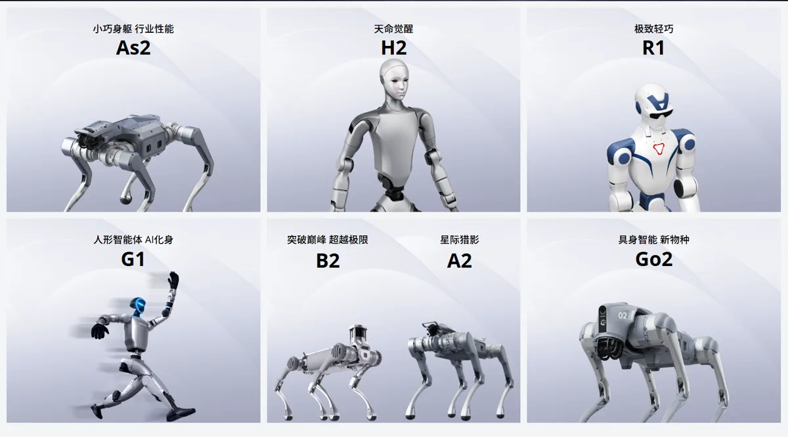
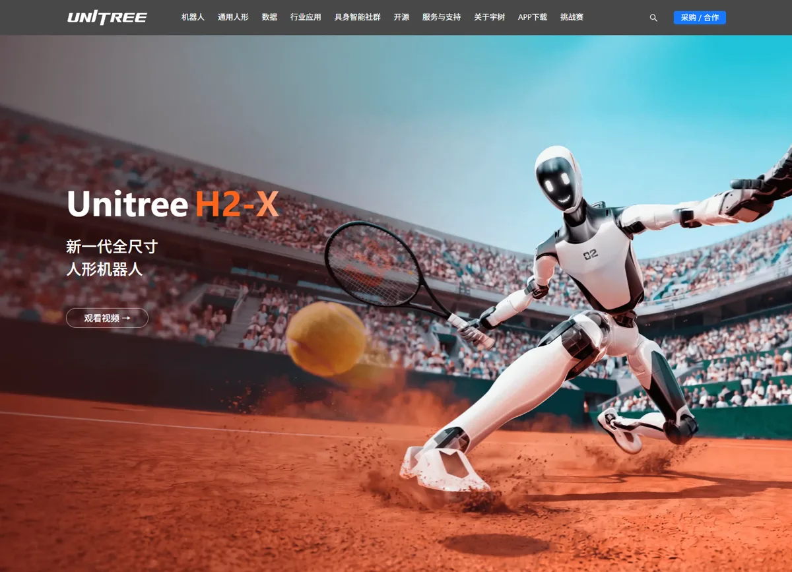
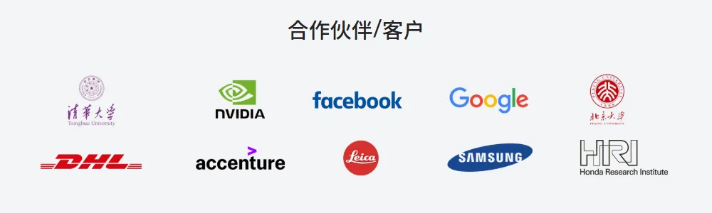

宇树科技宇树科技股份有限公司（Unitree Robotics，上交所科创板上市）
全球人形机器人里少见的盈利公司：靠四足机器狗起家，2025 年营收 17 亿元、人形机器人出货 5,500 多台，毛利率约 60%；2026-08 登陆科创板，市值一度超 4,400 亿元。但买家七成是高校与科研机构，真正进车间干活的还很少。
一页结论
- 成本是第一竞争力：旋转关节路线 + 核心部件自研自产 + 四足与人形共用底层，2025 年人形机器人单位成本约 6.1 万元，毛利率约 63%S2
- “以价换量”的打法复制到人形：从 H1 均价约 59 万元到 2025 年人形均价约 16.6 万元；R1 起售价 3.99 万元，把人形机器人拉到消费级门口S2
- 出货领先但场景偏早期：人形机器人收入七成来自科研教育，行业应用只占 9%，其中一半以上是企业展厅导览S1
- “大脑”刚开始投入：招股书承认自研具身大模型尚未规模化用于在售产品；募资的 48% 投向模型研发，2026 年前三季度研发投入增长 191%S1S3
- 上市后利润承压：2026 年前三季度扣非净利润 3.49 亿元，同比下降 19%；股价从上市首日高点回撤超 60% 后反弹，市盈率约 465 倍S3
01公司介绍
| 项目 | 内容 |
|---|---|
| 公司 | 宇树科技股份有限公司，2016 年成立于杭州S1 |
| 官网 | unitree.comS4 |
| 创始人 | 王兴兴，直接持股 23.82%，通过一股十票的特别表决权控制 68.78% 表决权（发行后 65.31%）S1S2 |
| 股东 | 美团、红杉中国、经纬创投、腾讯等；2025-06 最近一轮融资投后估值 127 亿元S1 |
| 上市 | 2026-08-19 科创板上市，发行价 150.80 元，募资约 61 亿元（超募约 19 亿元）S5S6 |
| 市值 | 2026-10-28 收盘约 2,815 亿元；首日盘中一度超 4,400 亿元S3 |

02公司战略
宇树的战略是“硬件极致性价比 + 运动能力领先”，用规模和成本建立壁垒，再补具身大模型。
- 以价换量：四足机器人从 Go1 1.6 万元到 Go2 9,997 元；人形机器人复制这一路径，四款机型覆盖 3.99 万到约 50 万元价格带S2
- 运动能力做品牌：全尺寸电驱人形原地后空翻、奔跑超过 5 米 / 秒、两次登上央视春晚、世界人形机器人运动会多枚金牌S1S2
- 募资投向“大脑”：42 亿元原计划募资中 20.22 亿元投向智能机器人模型研发，研发类项目合计占 85%S1
- 物理 AI：王兴兴称物理 AI 快则一到两年、慢则两到三年可能迎来突破，竞争关键在模型与真实机器人的对齐和数据闭环S3
03产品定位与产品线
| 产品 | 定位 | 价格 / 状态 |
|---|---|---|
| R1 | 轻量人形，面向消费与入门科研S2 | 3.99 万元起（2025-07）S2 |
| G1 | 中型人形，“人形智能体”，2025 年 1–9 月占人形销售额 88.9%S1S4 | 9.9 万元起（2024-07）S4 |
| H1 / H1-2 | 全尺寸人形，运动性能代表作S1 | 2023 年均价约 59 万元S2 |
| H2 / H2-X | 新一代全尺寸人形，约 170 cm、65 kg 以上、31 自由度；H2-X 宣传安保巡逻等场景S4 | H2 系列价格未在本次核实 |
| 四足 Go2 / B2 / A2 | 消费级 Go 系列与行业级 B 系列；报告期四足累计销量超 3 万台S1 | Go2 9,997 元起S2 |

04主要功能与技术路线
大脑
05解决方案与场景
06商业模式
07上下游供应链与渠道
上游：原材料
2025 年原材料采购 7.94 亿元；直接材料占主营成本 81.73%S2芯片等外购件（供应商名单未在本次核实）
合作伙伴
官网列出：NVIDIA、Google、Facebook、三星、DHL、埃森哲、徕卡、本田研究院、清华、北大S4
下游客户
高校与科研机构为主；企业展厅、商业演出；少量工业巡检S1

08主要客户与落地
09营收与财务
10落地痛点
11近期动态
12潜在风险分析意见
| 风险 | 表现 | 可能程度 |
|---|---|---|
| 估值过高 | 滚动市盈率约 465 倍，股价波动剧烈S3 | 高 |
| 增速放缓与利润下滑 | 扣非净利润连续下降，费用快速上升S3 | 高 |
| 客户结构单一 | 人形收入七成来自科研教育，需求可能饱和（分析意见） | 中 |
| 大脑落后 | 具身大模型尚未规模化应用S1 | 中 |
| 价格战 | 行业成本与售价快速下降S1 | 中 |
“可能程度”为基于现有公开信息的判断，不是量化预测。
13综合结论分析意见
优势
- 行业最低成本与最高毛利
- 出货规模领先
- 运动能力与品牌
劣势
- 大脑起步晚
- 工业场景收入少
- 决策高度集中
机会
- 上市募资投入模型
- 科研平台标准化
- 海外市场
威胁
- 同行降价
- 估值回调
对 AI 产品团队的启示
- 先找到愿意付钱的“非最终场景”：科研教育和展演不是人形机器人的终局，但能支撑规模、利润和数据，这是从 0 到 1 的现实路径。
- 硬件成本决定软件的上限：没有便宜可靠的本体，就没有足够多的机器人去采数据、训模型。
- 把一个能力做到“出圈”：后空翻、春晚、运动会让宇树获得了远超同行的品牌认知。
- 看财务要看口径：出货量、净利润都存在多种口径，评估时要先确认统计范围。
信息缺口
以下信息未找到可靠的公开来源，本报告不做推测。
- H2 / H2-X 售价
- 主要供应商与前五大客户名单
- 2026 年人形机器人出货量
- 海外收入的国家分布
- UnifoLM 模型的商用时间表
来源
A 官方 · B 权威媒体或第三方 · C 社区（仅用于口碑与线索）。访问日期均为 2026-11-02。
- S1 · B深度拆解宇树科技招股书：一年营收17亿，宇树机器人都卖给了谁？经济观察网 · 2026-03-20
- S2 · B宇树科技IPO，五个关键判断21 世纪经济报道（南财号） · 2026-08-19
- S3 · B宇树上市后首份财报：营收涨70%，利润却跌了17%澎湃新闻（澎湃号） · 2026-10-29
- S4 · A宇树官网（产品页、H2-X、新闻中心、合作伙伴）宇树科技 · 2026-11-02 访问
- S5 · B宇树科技，8月19日上市财联社 · 2026-08
- S6 · A宇树科技首次公开发行股票并在科创板上市招股说明书巨潮资讯网 · 2026-05-25